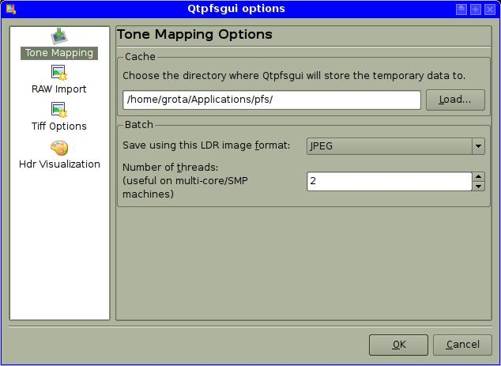

Qtpfsgui needs a directory path where it will save some intermediate temporary files. Here you can specify this path.
You can also specify how many threads you want to use for the Batch Tone Mapping feature (and the file format you want to save the images to). Each thread gets allocated to a different CPU.
